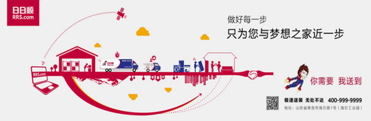

日日顺进入日日顺网站
日日顺是海尔电器集团旗下的综合服务品牌，旗下有日日顺乐家、日日顺物流、日日顺健康等国内领先的社区服务平台。日日顺以诚信为核心，以社群为基本单元，致力成为后电商时代的引领平台。日日顺乐家是中国领先的社区服务平台，提供源产地农特产、快递收发存、乐家驿站等便民服务；日日顺物流是中国大件物流领导品牌，9万辆车、500万平米云仓、18万服务师提供极速送装，无处不达体验；日日顺健康是中国引领的净水、净空、母婴等健康解决方案平台。2015年，日日顺以168亿元的品牌价值入围中国最有价值品牌榜，同比增长18%，成为国内首个品牌价值过百亿的物联网诚信品牌。
成长历程
2016年1月，2015-2016 ECI Awards(艾奇奖)全球年度电商创新人物与机构颁奖典礼暨高峰论坛上，日日顺荣获ECI Awards(艾奇奖)年度电子商务创新平台奖项
2015年12月，在中国（杭州）国际电商营销峰会上，日日顺荣获金麦奖年度最佳营销大奖
2015年10月，第22届中国国际广告节颁奖盛典上，日日顺净水商城荣获“中国广告长城奖•2015广告主营销传播金奖”
2015年9月，在“中国电子商务博览会”上，日日顺净水商城再次斩获年度中国电商创新成长系列奖项
2015年7月，日日顺以168亿元的品牌价值再次入围中国品牌价值100强
2015年4月，在中国智慧城市年会上，日日顺乐家智能快递柜平台凭借最后100米用户最佳体验荣获“中国智慧城市优秀解决方案”荣誉称号
2015年3月，获得由中国质量万里行促进会评选的全国质量诚信品牌优秀示范企业
2015年2月，在全国工商联家居装饰业协会举办的“第十届中国家居业总裁(上海)论坛”及“中国家居业(2013-2014)双年总评榜”活动上，日日顺家居服务有限公司获得“中国家居业(2013-2014)十大家居创新品牌”，和“中国家居业(2013-2014)行业杰出贡献人物”两个重量级奖项
2015年1月，获得由媒体训练营冬季峰会颁布的“最佳创新企业奖”
2014年10月，日日顺以142。86亿元的品牌价值连续第二年入围中国品牌价值100强，并成为百强排行榜中品牌价值增幅最大的品牌。
2014年12月，在第十届最佳商业模式中国峰会上摘得“2014年度最佳商业模式”大奖
2014年12月，在第十二届中国互联网经济年会上荣膺“电商物流最佳服务商”称号
2014年12月，在第九届中国网上零售年会上荣膺“2014电商服务年度风云奖”
2014年10月，获得由中国物流与采购联合会授予的“2014中国物流创新奖”
2014年9月，在“中国电子商务博览会”上，日日顺净水商城斩获年度中国电商创新成长系列奖项
2013年11月，在第八届中国网上零售年会上，荣膺2013杰出电商仓储物流服务奖
2013年10月 成为国内首个品牌价值过百亿的物联网企业
2013年03月 获得国家标准化研究院颁布的“中国顾客满意度连续八年问鼎第一”
2013年03月 易观电子商务年会上日日顺被授予“最佳电子商务物流服务商”
2012年12月 获得中国商业联合会授予的“全国企业文化建设特殊贡献单位”
2012年12月 获得中国商业联合会授予的“中国首批五星企业称号”
2012年12月 获得《环球企业家》授予的“年度商业模式创新典范奖”
2012年04月 获得中国家电服务维修协会颁发的“空调支架服务示范企业称号”
2011年11月 获得中国物流与采购联合会颁发的“AAAAA级物流企业”
2011年01月 获得国家标准化管理委员会颁发的“首家中国物流示范基地
进入日日顺网站